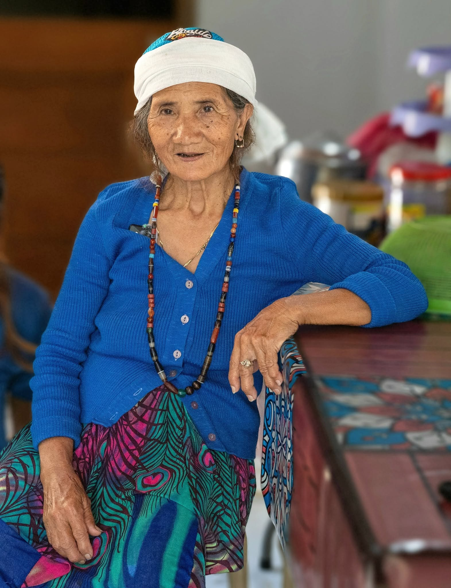
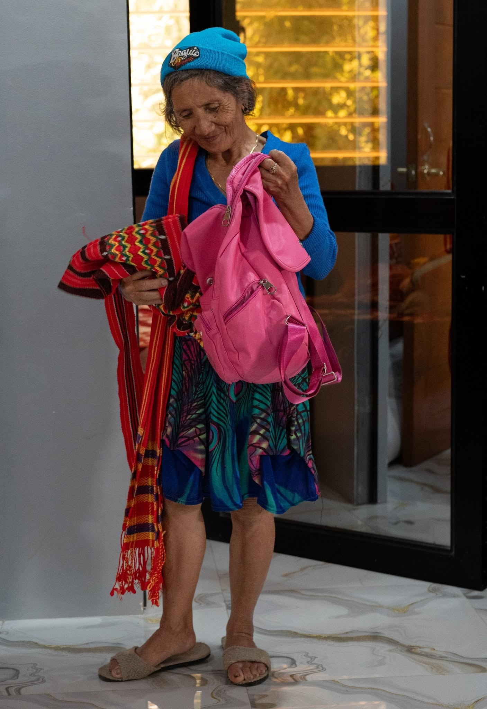

Aida Amoga: Manjajawak (Shaman)
The Last Manjajawak of Balbalan, Kalinga

[Note: The subtitle of my article was based on the statements made by auntie Aida and other relatives about her being navun-an un manjajawak 'the last remaining traditional healer', her peers having died already. If there are other manjajawak in Balbalan, I'd be among the first ones to rejoice. Manang Aida has been disrespected a lot by those who do not understand her work, and I am just a student of my culture seeking to present her as a cultural master who should be cherished.]
(Thank you to amonakon Dolly Pultz and DA Mariz for coordinating our meeting with manang Aida.)
Manjajáwak, also spelled mandadáwak or manchachawak, is a pan-Kalinga term which can be translated as 'traditional healer' or 'Indigenous ritualist'. It has a similar meaning to the Tungusic word šamán 'one who knows', 'one who sees' .
As an Indigenous Person, I reject the terms 'witch doctor' and 'quack doctor' to refer to the manjajawak. These are labels arising from colonial and Christian prejudice which stigmatizes traditional practices as evil or demonic and fake. Dismissed as "pagan", the work of the manjajawak is regarded simply as a vestige of a superstitious past.
What is lost in this labelling is the vital role of the manjajawak in the psycho-social framework of traditional culture which is still very much alive among communities grouped under the misnomer "Kalinga". The manjajawak is not just a spiritual healer -- s/he is a culture bearer whose mind is a repository of Indigenous Knowledge Systems and Practices (IKSP) which includes um-umag 'fictive and non-fictive narratives', genealogy, local topography, ethnomedicine, largely forgotten linguistic expressions, and many others. [See Esteban Magannon's paper on the manjajawak of southern Kalinga in our first Saliksik-Kordilyera book published by UP Baguio @ https://share.google/e7L4t5gxeiFQslqbC
Also lost among many is the fact that what they have long regarded as Christian beliefs and practices are rooted in so-called paganism. [You can start with Francesca Stavrakopoulou's God: An Anatomy"].
Further, if they are self-reflexive enough, what they regard as superstitious among Indigenous people may not be so different from their personal and collective expressions of faith.
I have long wanted to meet and learn from a manjajawak but I didn't have the opportunity to do so in the past. Fortunately, this time my daughter and I were able to visit our town's remaining manjajawak who, as we would happily discover later, is a fellow iVanaw and a relative as well.

She is Aida Amoga, a resident of sitio Jalayap/Dalayap, Poblacion, Balbalan. Born on 30 October 1956 in Vullalayaw/Bulallayao, Pattikyan/Pantikian, she and her family moved to Poblacion in the 1960s. As a child, she had an awareness of her gift but it remained dormant until a certain Christian sect, notorious in the Cordillera for burning cultural artifacts, took away her kalang (a ritualist's sacred box where coins or meat and rice are placed prior to the conduct of a jawak) and burned it. According to her daughter-in-law Marissa, Aida -- 41 years old at the time -- thereafter lost her voice and lay sick for three months. It was only after her son Randy had a native pig butchered and after she performed a jawak on herself that she began to recover.
From then on, she has conducted countless rituals for different occasions or situations: weddings (sablay), house blessings (jumog), newborn (ulug), mental or psychological illness (sakkulang) , illness due to a curse (yabyab), accidents (pakuy), farewell to the dead (voljak), and war hero's welcome (salapat). [N.B.: The /l/ in sav-ulay, ulug, voljak, and salapat are interdental approximants].
Performing these eight forms of rituals in the past 27 years has been physically draining for her especially that calls for help come not only from Kalinga but also from other localities such as Ilocos Sur, Baguio City, and Bulacan. Still, she must answer each call and so she soldiers on.
In contrast to self-styled, super-hyped, money-hungry "faith healers" from various Christian sects, she does not claim to heal all manners of illnesses or diseases nor carry a cavernous offering bag. She also makes it a point to first refer a sufferer to a nearby clinic or hospital. It is only when modern medical remedies fail to cure the individual that she takes over the case.
Talking to her and watching some of her recorded rituals, I find it hard to understand or explain how she does her work. I consider myself as a non-religous Indigenous Person, but I am also aware that I don't know everything and must thus be open to this lived experience often categorized as "spiritual".
If only I had the time and opportunity, I would follow her all year round to have a deeper awareness of her value to the community. Sadly, I don't.
It will take a whole book to tell her story. In time, we shall write her book. But perhaps it suffices for now to introduce her here, she whose life and work are intricately woven into the very fabric of our age-old traditional cultures and whose name should be etched into that proverbial tree of local lore and history.
She should thus be honored, not vilified. Her work should be revered, not feared. More importantly, she should not be viewed as a curio, a cultural artifact or a touristy spectacle, but as a living culture bearer and a fellow traveler in this fleeting plane of existence; not as an ethnic item to be sensationalized or hyped, but an embodiment of a world and worldview that should be appreciated and understood.
Yamanon, auntie Aida, ot matagutagu ka!